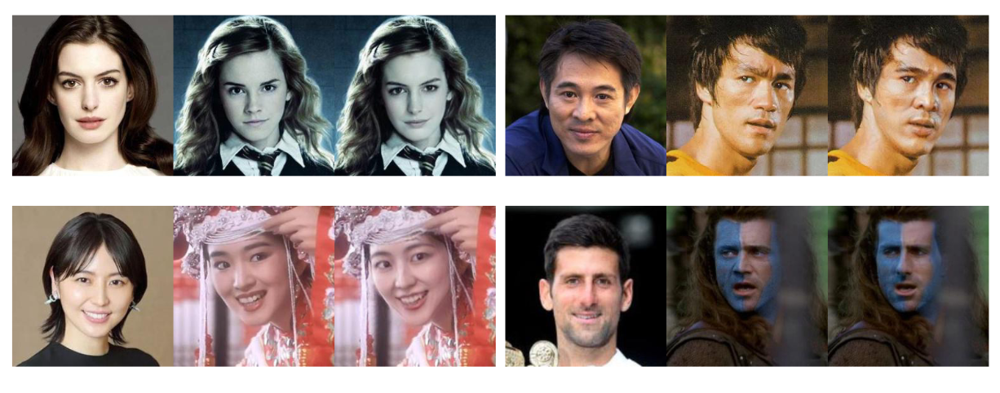

About FaceSwap
What is this thing all about anyway?

Face swap refers to an activity in which a person's face is swapped with the face of another person or animal or with an inanimate object, most often using an app or app filter developed for the purpose. Instances of face swaps have reached memetic status, particularly unusual or strange ones.
The practice of face swapping began with Photoshop in the early 2000s. BuzzFeed notably brought attention to face swaps when it began publishing some striking examples in 2012. Face swaps really took off with the advent of neural networks. However, most often than not, the process was really convoluted and required plenty of knowledge in the field, which made it unappealing to the regular user.
What FaceSwap aims to achieve is changing this unfortunate fact. We provide an easy-to-use interface and allow people to automatically swap faces in photos taken on their phones. We also give you the opportunity to swap faces with your favourite celebrities in the so-called reaction GIFs that have been exploding in popularity recently. By doing so, you can create some unique reactions that will surely impress your friends and colleagues.
We wish you happy swapping!
- the FaceSwap team, 2022.